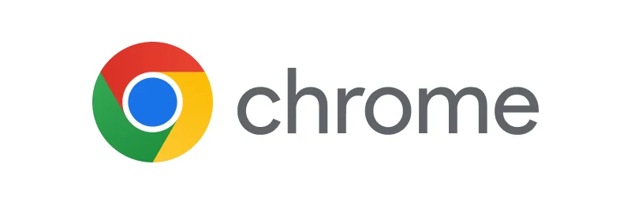

Master your browsing experience with these essential Chrome keyboard shortcuts. From navigating between tabs to managing bookmarks and accessing browser features more efficiently, these shortcuts are indispensable for power users. Boost your productivity and streamline your browsing tasks with these convenient keyboard combinations.
Press Alt+Home to open your homepage.
Press Alt+← to go back a page.
Press Alt+→ to go forward a page.
Press Alt+↓ to display all previous text entered in a text box and available options on a drop-down menu.
Press F11 to display the current website in full-screen mode. Pressing F11 again will exit this mode.
Press Esc to stop loading the page or a download from loading.
Press Ctrl+- to zoom out of a web page and decrease font size (if supported).
Press Ctrl++ to zoom in on a web page and decrease font size (if supported).
Press Ctrl+0 to reset browser zoom to default.
Pressing Ctrl+1 - Ctrl+8 moves to the corresponding tab in your tab bar.
Press Ctrl+9 to switch to the last tab.
Type an address and press Ctrl+Enter to quickly complete it (e.g., "youtube" becomes https://www.youtube.com).
Press Ctrl+Shift+Delete to open the Clear browsing data window to quickly clear private data.
Press Ctrl+Shift+A to search open tabs.
Press Ctrl+Shift+B to toggle the bookmarks bar between hidden and shown.
Press Shift+Esc to open the Google Chrome Task Manager.
Press Ctrl+A to select everything on a page.
Press Ctrl+D to add a bookmark for the page currently opened.
Press Ctrl+F to open the "find" bar to search text on the current page.
Press Ctrl+O to open a file in the browser.
Press Ctrl+Shift+O to open the Bookmark manager.
Press Ctrl+H to open browser history in a new tab.
Press Ctrl+J to display the downloads window.
Press Ctrl+K or Ctrl+E to move your text cursor to the omnibox so that you can begin typing your search query and perform a Google search.
Press Ctrl+L or Alt+D to move the cursor to the browser address bar and highlight everything in it.
Press Ctrl+N to open a new browser window.
Press Ctrl+Shift+N to open a new window in incognito (private) mode.
Press Ctrl+P to print the current page or frame.
Press Ctrl+R or F5 to refresh the current page or frame.
Press Ctrl+S to open the Save As window to save the current page.
Press Ctrl+T to open a new tab.
Press Ctrl+U to view a web page's source code.
Press Ctrl+W to close the current tab.
Press Ctrl+Shift+W to close the currently active window.
Press Ctrl+Shift+T to reopen the last tab you've closed. Press this keyboard shortcut multiple times to restore each of the closed tabs.
Press Ctrl+Tab to move through each of the open tabs (left to right). Press Ctrl+Shift+Tab to reverse the direction (right to left).
Press Ctrl+Left-click to open a link in a new tab in the background.
Press Ctrl+Shift+Left-click to open a link in a new tab and switch to the new tab.
Press Ctrl+PgDn to open the browser tab to the right.
Press Ctrl+PgUp to open the browser tab to the left.
Press Spacebar to move down a page at a time.
Press Shift+spacebar to move up a page at a time.
Press Alt+Shift+B to open the browser bookmarks bar.
Press Alt+Shift+I to open the Chrome feedback window.
Press Home to go to the top of the page.
Press End to go to the bottom of the page.
Press F10 to select the more options menu. Once selected, press Enter or the down arrow to access the items in the menu.